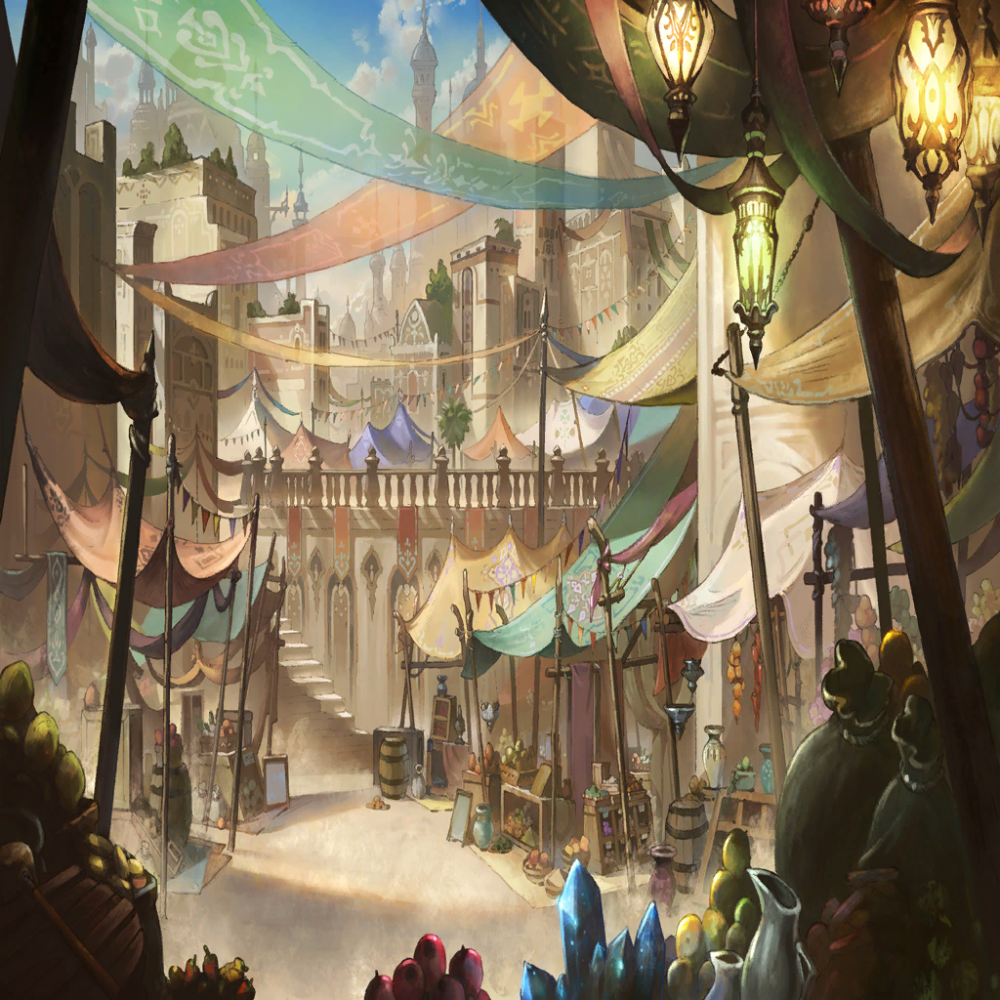

|
|  |
| ジェスター |
神頼みは叶わないんだよ |
| ユヴェン |
…同意だね |
| ジェスター |
神様を見たんだよ。信じてくれよ |
| ジェスター |
神様が俺を超人になされた
それからだ |
| ジェスター |
今までわかっていたことが突然！
ある日感じられなくなったらどうする？
きっと誰もがこう言うだろうね |
| ジェスター |
『信じられなぁ～い』 |
| ユヴェン |
…暗殺目標
元バベル聖教会の敬虔な信者にして
秘匿部隊・骸所属―― |
| ジェスター |
ママの為に
神様を探した愚者はどうなったと思う？ |
| ユヴェン |
…………あー |
| ジェスター |
神様に救われたんだ！
やったねえ良かったねえ！ |
| ジェスター |
超人になった愚者はね？
なんでもできた。自由だ。万能だ
戒めから解き放たれた！ |
| ユヴェン |
…ふうん |
| ジェスター |
でもねでもね、よく考えて
万能でなんでもできるってことは
全部が簡単で退屈ってことなんだ |
| ジェスター |
レベルもルールも縛りもないゲーム
何か達成する喜びもない、誰にも見られない
繰り返す“つまらない”の蓄積 |
| ジェスター |
困った愚者は祈る。神頼みだ
だけど神がこうしたんだよ俺のこと
神を見たのに、もう神を信じられやしない |
| ジェスター |
嫌気が差しちゃってね
ママに愚痴った『ボク死にたいよお』って
そうしたらママが言うんだ |
| ジェスター |
『ふうん』って |
| ジェスター |
くくっ、あっはっはっはっは!!!!
あはははははああはははあはははは！ |
| ユヴェン |
その結果、骸を足抜けして
“つまらなくない”ゲームを探したと？ |
| ジェスター |
ハハハハハハッッ
そうだねそうだね！
結局つまらないゲームだった！ |
| ユヴェン |
グラトニー＝フォスの
コロッセオに飛び入り
関係者を皆殺しにして |
| ジェスター |
俺が？ 俺じゃない！
わたしがやったんだよ！ わたしが！ |
| ユヴェン |
…しらばっくれてんじゃねえ |
| ジェスター |
信じてくれよお |
| ユヴェン |
『信じられない』 |
| ジェスター |
特等席を探してるんだ |
| ユヴェン |
クライアントはカンカンだ
聖教会の恥部、神への冒涜だと |
| ジェスター |
ああ。ずっとボクは祈ってる
満足のいく最期を迎えられたら
どんなに幸福だろうかと |
| ユヴェン |
なんとしても殺せとのお達しだ |
| ジェスター |
優しい音楽、おだやかな風
やわらかなベッド、たまらない美酒… |
| ジェスター |
そしてお気に入りの劇をママと一緒に
とっておきの席で観ながら目を閉じるんだ
ゆっくりと………… |
| ジェスター |
瞼の裏に光がうっすらと残って…
あたたかいなあと思いながら――死ぬ |
| ジェスター |
そんな特等席を、くれよ |